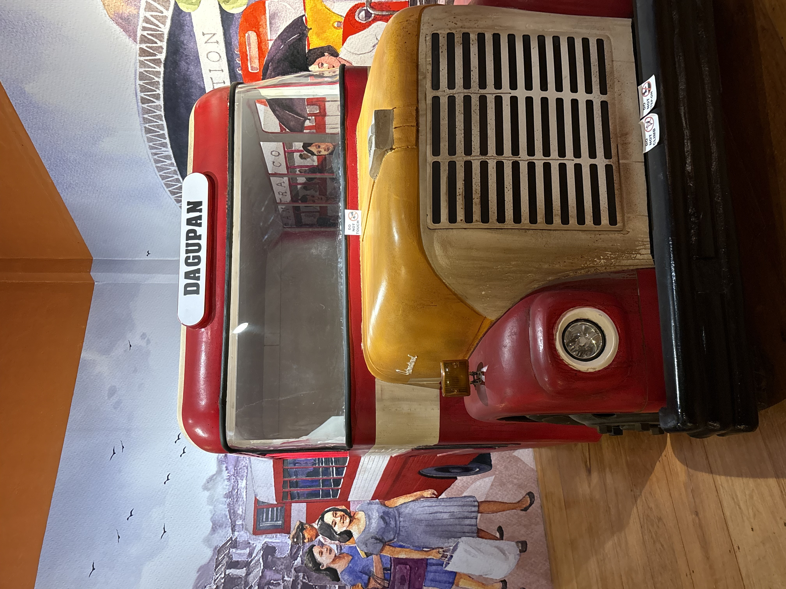
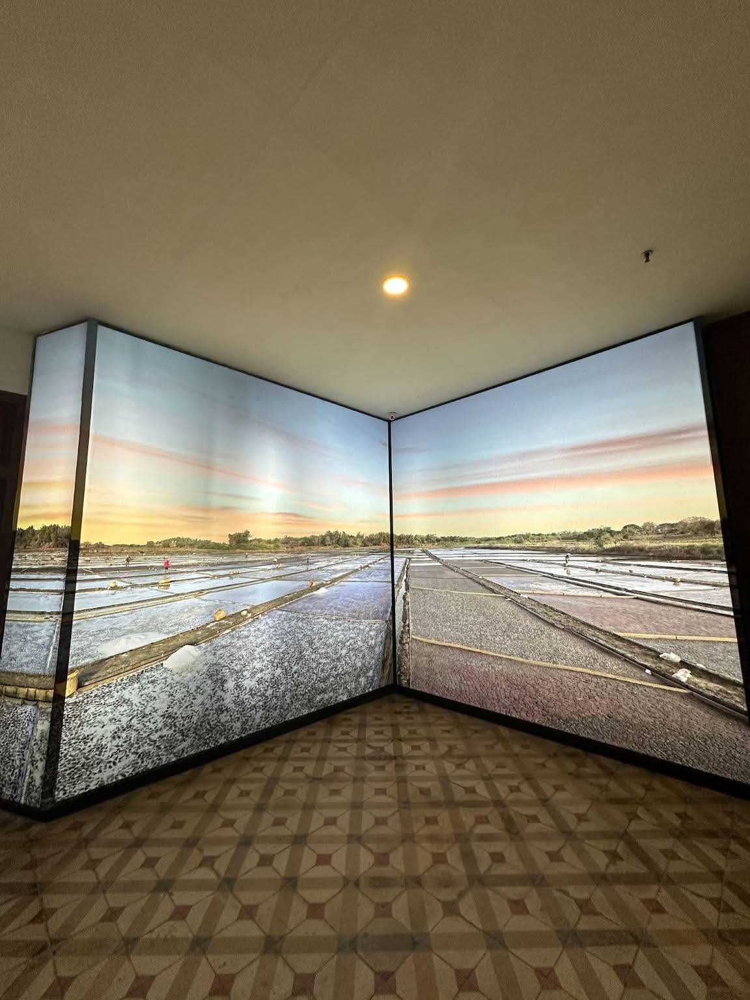
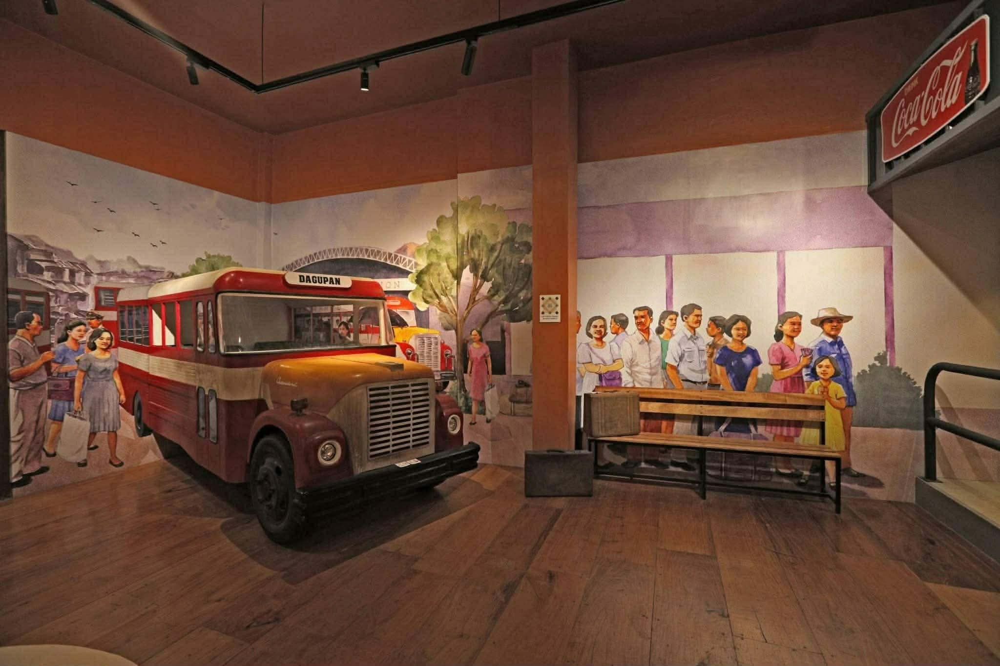
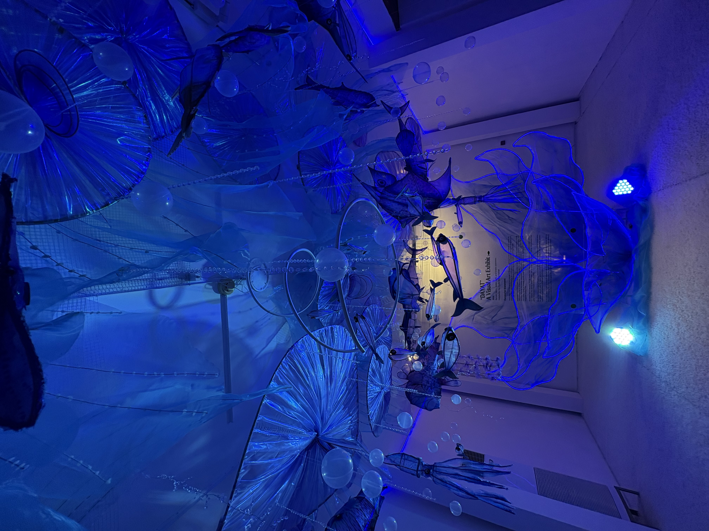
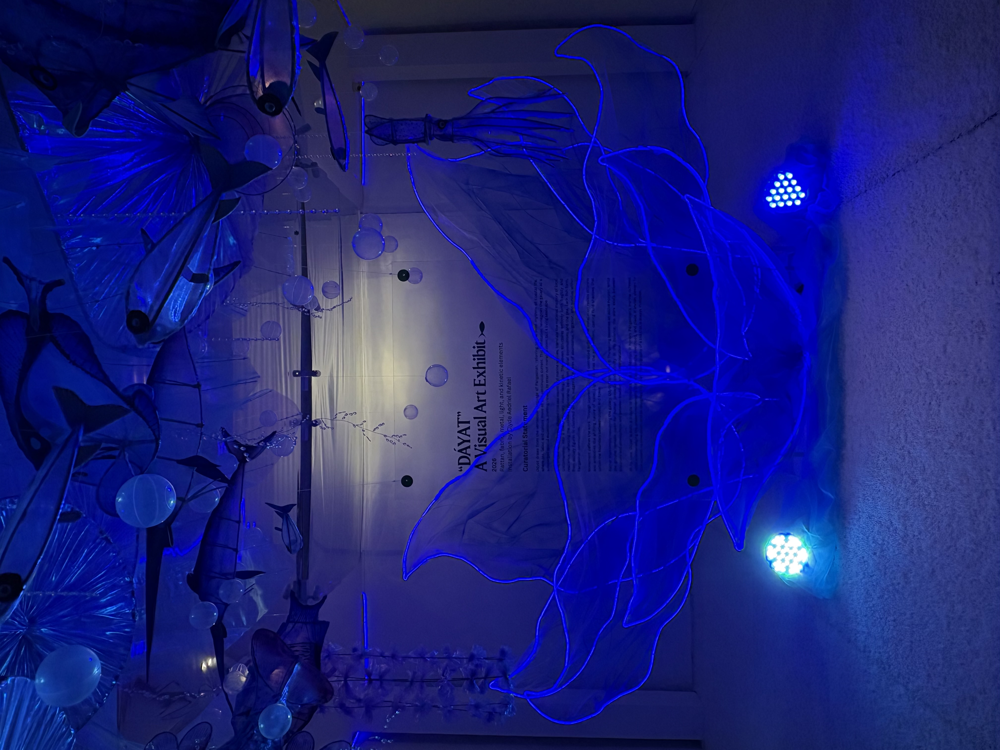

WELCOME TO
MUSEUM PORTAL
Step inside Filipino culture through stories, landmarks, and visual heritage.
Explore this curated museum portal to learn about iconic sites, living traditions, and the rich history of the Pangasinan.
Digital Archives
Preserving the past for the future. A curated selection of our most significant cultural artifacts.

SCULPTURE
Kalukor

MARITIME
Traditional Fishing

TRANSPORT
King of the Road

AGRICULTURE
The Carabao

INDUSTRY
Salt Makers
Museum Gallery
A detailed look at the exhibits and stories that define Pangasinan's rich history.

KALUKOR
According to UNESCO/ICHCAP (2021), “Kalukor” is a traditional beach seine fishing practice in Pangasinan where fishermen collaboratively pull nets from the shore for catching fishes.

Jeepney
Jeepneys are often called “the king of the road”, but in the past, it was just used as a military jeep that the United States army left in the Philippines. After World War II, the public transport in the country was devastated but Filipinos, known for being the street smart people they are, found a way to convert the remaining military jeeps into something useful for their survival. They modified the vehicles by adding roofs, extending the chassis, and installing rear bench seats that created a unique look and affordable public transport system that eventually became an icon in the country.

Kalabaw
The people of Pangasinan really love the animal “Kalabaw” or Carabao. This kalabaw is very special to them. It makes them think of farming and the way they live every day. The kalabaw reminds them of Pangasinan and the life they have there with the kalabaw. At this museum you can see the kalabaw pulling a cart. The cart is filled with baskets that people made by hand.


DÁYAT
The “DÁYAT” is a visual art installation featured in the Banaan Pangasinan Provincial Museum that highlights the significance of the sea among the residents of Pangasinan. “Dayat” in Tagalog “Dagat” refers to the sea. This visual art installation captures the lives of the fishermen who earns from fishing. The art piece conveys the message that the sea is an essential natural resource and source of cultural identity for the people living nearby coastal regions of Pangasinan.
Farmers
Farmers making salt in Pangasinan are featured in a digital installation. The image displays the vast salt beds of Pangasinan, showing the detailed process of salt crystallization. It also features a worker performing traditional salt-making tasks, set against a beautiful skyline and the distant view of mountains and landscapes.
Sources & References
Credited materials and research used for this portal.
UNESCO ICHCAP
KALUKOR Research
Comprehensive study on maritime intangible cultural heritage and traditional fishing.
Filipeanut Art
Jeepney History
Historical evolution of the iconic Philippine Jeepney from WWII surplus.
Akar ng Pangasinense
Dayat Tradition
Community documentation of local sea-related traditions and maritime culture.
Philippine Carabao Center
Carabao Cultural Page
Information about the Carabao's vital role in Philippine agriculture and heritage.
pangasinan.gov.ph
Farmer Geography
Overview of Pangasinan's strategic location, mountain ranges, and the vital Agno River system.